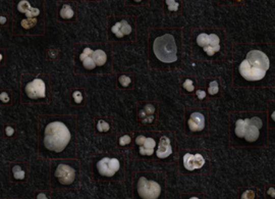
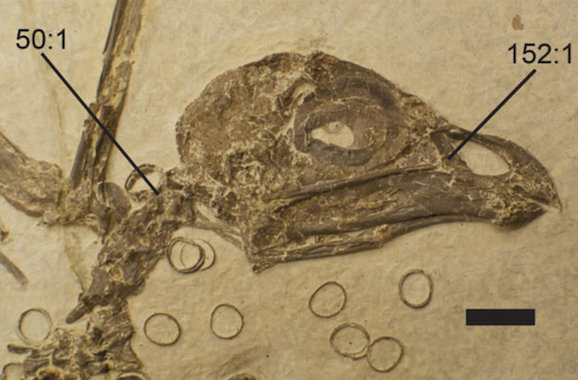
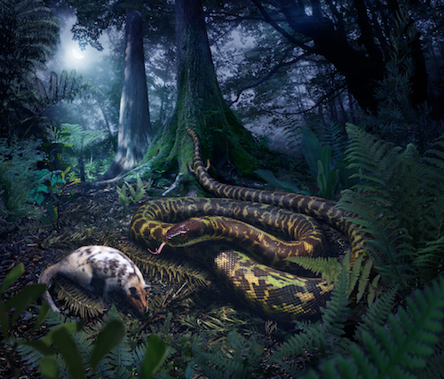
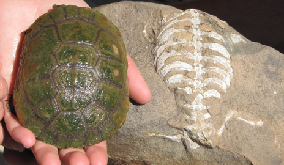

|
 |
Press for Hsiang et al. (2019) Endless Forams: >34,000 modern planktonic foraminiferal images for taxonomic training and automated species recognition using convolutional neural networks.
EOS | NHM | YaleNews | Yale Daily News |
|
 |
Press for Field & Hsiang (2018) A North American stem turaco, and the complex biogeographic history of modern birds.
BBC | BMC Series Blog | talkRADIO.mp3 | Altmetric |
|
 |
Press for Hsiang et al. (2015) The origin of snakes: Revealing the ecology, behavior, and evolutionary history of early snakes using genomics, phenomics, and the fossil record.
NPR | New York Times | LiveScience | Yale Press Release BMC Series Blog | Smithsonian Magazine | NBC |
|
 |
Press for Lyson, Bever, Scheyer, Hsiang & Gauthier (2013) Evolutionary origin of the turtle shell.
YaleNews | BBC | ScienceDaily | NYIT News |